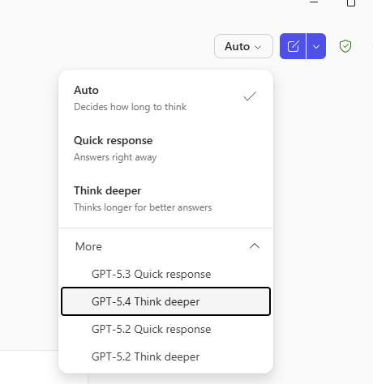

Microsoft Copilot: You're Probably on "Auto" — Stronger Models Are in the Menu
Quick one for people who use Copilot at work: the default is usually Auto up in the corner, and honestly most folks I talk to never click it. That's fine for a fast email polish. For anything where you need the model to actually think — a tricky Excel explanation, a careful rewrite, anything your manager might read — it's worth opening that dropdown.
You'll see three plain-english modes first: Auto (Copilot decides how long to "think"), Quick response, and Think deeper. Think deeper = slower, usually better reasoning. That's the big win for non-technical users who dont want to memorize model names.
Then expand More. That's where the specific GPT builds show up — in my app right now that includes things like GPT-5.4 Think deeper alongside quicker variants. Your exact list will change as Microsoft rolls updates; the habit that doesn't change is: click the menu before you start a hard task.

Rule of thumb
- Quick response / Auto: Short drafts, tone tweaks, simple questions.
- Think deeper / GPT-5.x Think deeper: Analysis, multi-step logic, anything where a wrong answer would be embarrassing.
Same prompt, different mode — you'll notice the difference. For ChatGPT, Claude, and Gemini we have a separate walkthrough; Copilot deserved its own post because that More section is easy to miss.